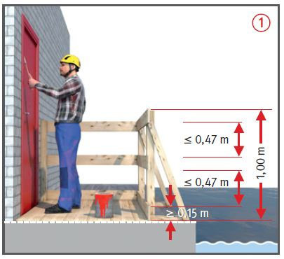
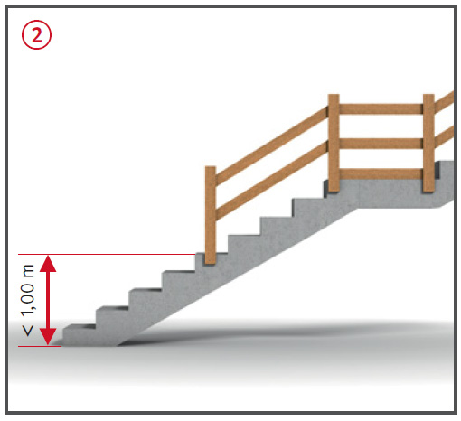
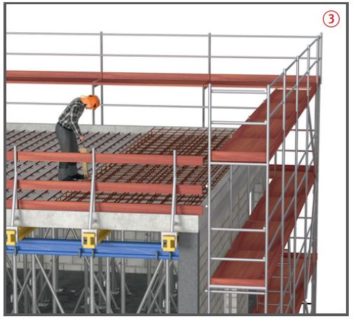
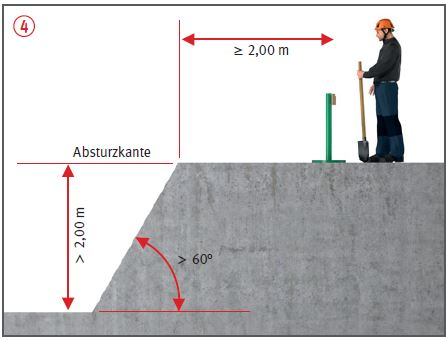
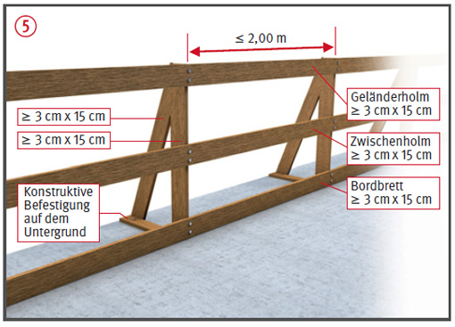

Absturzsicherungen auf Baustellen
Seitenschutz/Absperrungen
|
|


Gefährdungen
- Eine Absturzgefahr besteht bei einer Absturzhöhe von mehr als 1,00 m.
- Fehlende, unvollständig aufgebaute oder falsch dimensionierte Absturzsicherungen sowie fehlende Sicherungsmaßnahmen bei der Montage können Absturzunfälle zur Folge haben.
Schutzmaßnahmen
- Der Unternehmer hat dafür zu sorgen,dass Einrichtungen, die ein Abstürzen von Personen verhindern, vorhanden sind:
- unabhängig von der Absturzhöhe an Arbeitsplätzen und Verkehrswegen an und über Wasser oder anderen festen oder flüssigen Stoffen, in denen man versinken kann
 ;
;
- bei mehr als 1,00 m Absturzhöhe, soweit nicht nach Nummer 1 zu sichern ist, an freiliegenden Treppenläufen und -absätzen, Wandöffnungen und Verkehrswegen
 ;
;
- bei mehr als 2,00 m Absturzhöhe an allen übrigen Arbeitsplätzen
 ,
,
Öffnungen und Vertiefungen
Geradlinige Kante ≤ 3,00 m oder Flächenmaß ≤ 9 m2.
Öffnungen und Vertiefungen sind ordnungsgemäß gesichert, wenn diese umwehrt oder begehbar und unverschieblich abgedeckt sind.



Zusätzliche Hinweise für Absturzsicherungen
- Einrichtungen und Maßnahmen zur Sicherung gegen Absturz von Personen sind unabhängig von der Absturzhöhe nicht erforderlich, wenn:
- Arbeitsplätze oder Verkehrswege auf Flächen bis 22,5° Neigung liegen und in mindestens 2,00 m Abstand von den Absturzkanten fest abgesperrt sind, z.B. durch Geländer, Ketten oder Seile. Trassierbänder sind keine feste Absperrung
 . Zudem darf keine Gefährdung durch Glätte bestehen, so dass die Personen unter der Absperrung durchrutschen könnten,
. Zudem darf keine Gefährdung durch Glätte bestehen, so dass die Personen unter der Absperrung durchrutschen könnten,
- der horizontale Abstand der Absturzkante bei Arbeitsplätzen oder Verkehrswegen max. 0,30 m von anderen tragfähigen und ausreichend großen Flächen beträgt.
- Lassen sich aus arbeitstechnischen Gründen, z.B. Arbeiten direkt an der Absturzkante, Schutzvorrichtungen nicht verwenden, hat der Unternehmer dafür zu sorgen, dass an deren Stelle Einrichtungen zum Auffangen abstürzender Personen (Auffangeinrichtungen wie z. B. Fanggerüste, Dachfanggerüste, Auffangnetze, Schutzwände) vorhanden sind.
- Lassen sich keine Schutzvorrichtungen oder Auffangeinrichtungen einrichten, hat der Unternehmer dafür zu sorgen, dass persönliche Schutzausrüstungen gegen Absturz (PSAgA) als individuelle Schutzmaßnahme verwendet werden. Die geeignete PSAgA muss sich aus der Gefährdungsbeurteilung ergeben. Der weisungsbefugte und fachkundige Vorgesetzte hat die geeigneten Anschlageinrichtungen im Einzelfall sowie das Rettungskonzept festzulegen.
Ausnahme:
Schutzvorrichtungen bei einer Absturzhöhe bis 3,00 m sind entbehrlich an Arbeitsplätzen und Verkehrswegen auf Dächern und Geschossdecken mit bis zu 22,5° Neigung und nicht mehr als 50 m2 Grundfläche, sofern die Arbeiten von hierfür fachlich qualifizierten und körperlich geeigneten Versicherten ausgeführt werden, welche besonders unterwiesen sind und die Absturzkante deutlich erkennen können.
Zusätzliche Hinweise für Abmessungen Seitenschutz
- Geländer- und Zwischenholm sind gegen unbeabsichtigtes Lösen, das Bordbrett ist gegen Kippen zu sichern. Ohne statischen Nachweis dürfen als Geländer- und Zwischenholm verwendet werden:
- bei einem Pfostenabstand bis 2,00 m Bretter mit Mindestquerschnitt 15 x 3 cm,
- bei einem Pfostenabstand bis 3,00 m Bretter mit Mindestquerschnitt 20 x 4 cm oder Stahlrohre Ø 48,3 x 3,2 mm bzw. Aluminiumrohre Ø 48,3 x 4 mm.
- Bordbretter müssen den Belag um mindestens 15 cm überragen. Mindestdicke 3 cm,
- für Seitenschutzpfosten aus
Holz, die Bild
 entsprechen,
gilt der Brauchbarkeitsnachweis
als erbracht.
entsprechen,
gilt der Brauchbarkeitsnachweis
als erbracht.
07/2021